Redirecting risk instead of forbidding it
Rare collectibles only spawn at patrolled beaches. The game mechanic is the safety intervention, no warning, no signage, no lecture.
Snapshot
- Team
- Four designers, three interface designers and one innovation designer, working across all stages together.
- Partner
- Surf Life Saving Australia
The problem
Between 2013 and 2023, three-quarters of coastal drowning deaths in Australia happened more than a kilometre from a Surf Life Saving service. In 2022/23, 68% of those who died were aged 24 to 55, and 80% were male.
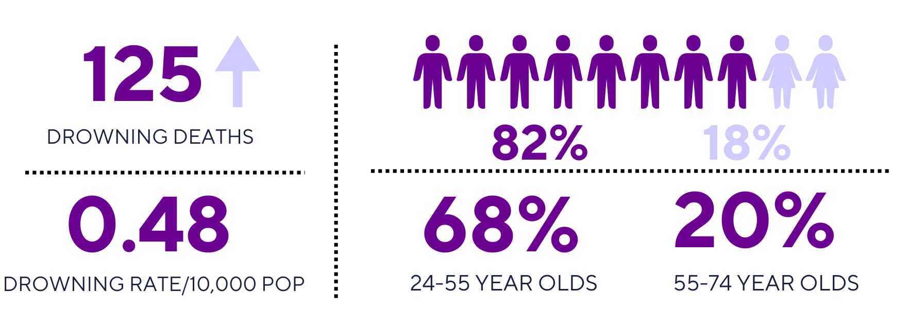
The goal was to reduce drowning deaths by shifting beach behaviour, not through more education, but by making safety feel like a choice people want to make.
Three barriers made the standard response useless.
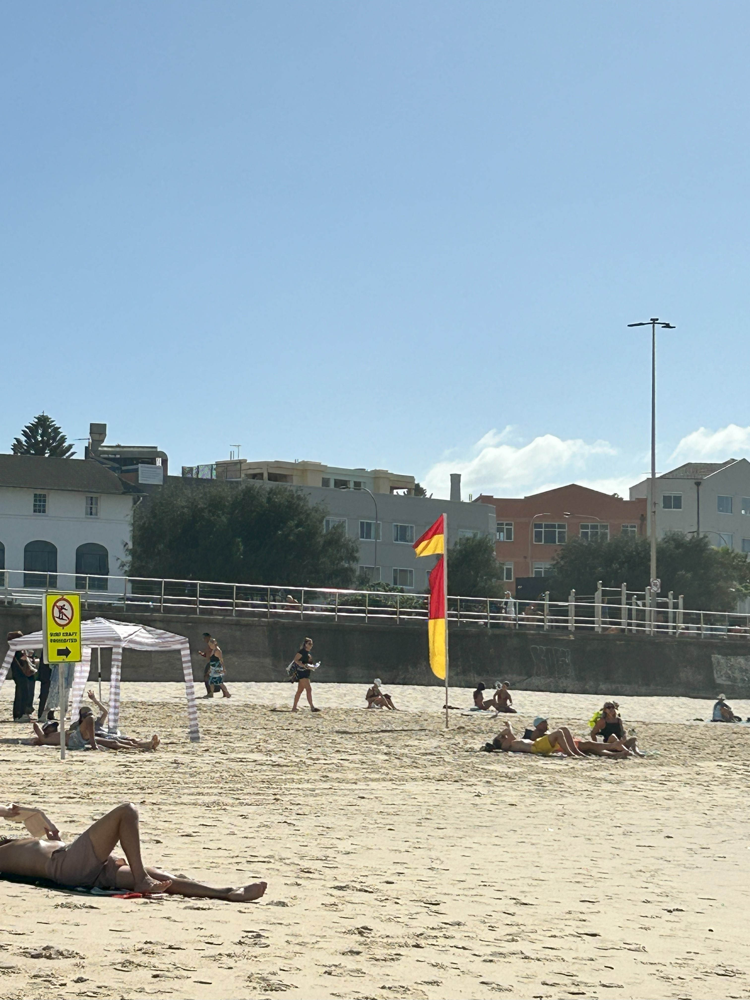
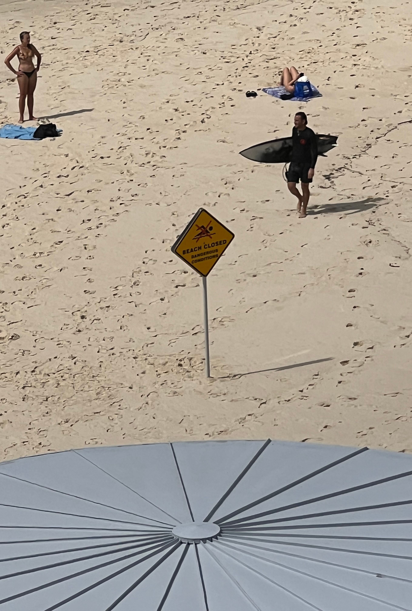
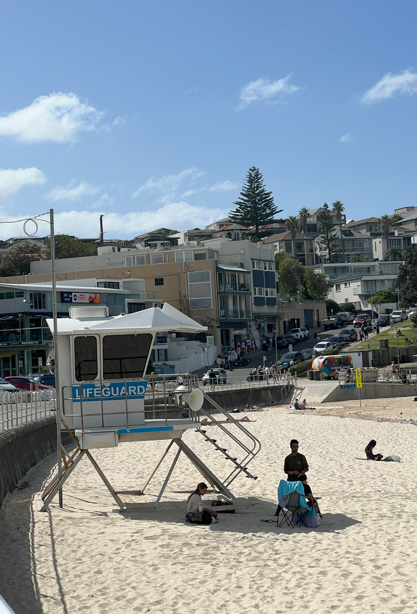
Overconfidence
Beachgoers trust their own judgment and believe experience makes them capable in a crisis.
Safety information
Existing signage is ignored or misread.
Education gaps
Campaigns reach locals and miss the tourists and recent arrivals most at risk.
The reframe
Every prior intervention tried to stop people going to unpatrolled beaches. Research showed they go deliberately, for adventure, believing they already know enough.
So we stopped trying to prevent the behaviour and redirected it.
Prospect Theory holds that people are moved more by avoiding a loss than by securing a gain. Warnings offer safety. A rare card you can only get in one place creates a loss you feel by not going. Beach Camp layers AR collection over real beaches through Google Maps, and the rare collectibles exist only at patrolled ones.
Nothing in the app tells anyone not to go anywhere.
Five principles shaped every decision: usability, interactivity, educational impact, community engagement and inclusivity.
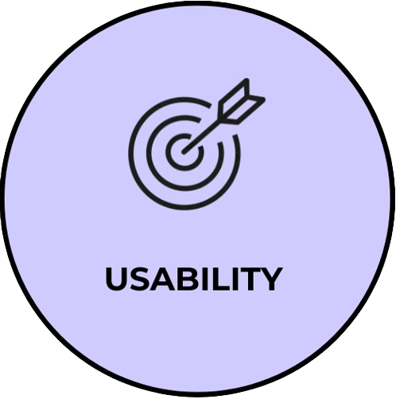
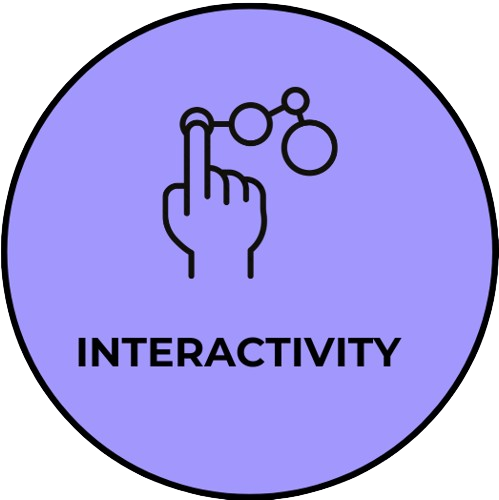
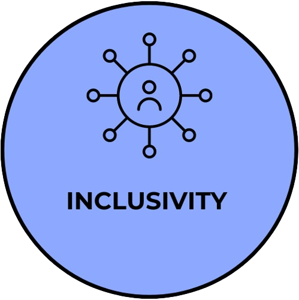
What is Beach Camp?
Rare collectibles only spawn at patrolled beaches. The game mechanic is the safety intervention, no warning, no signage, no lecture.
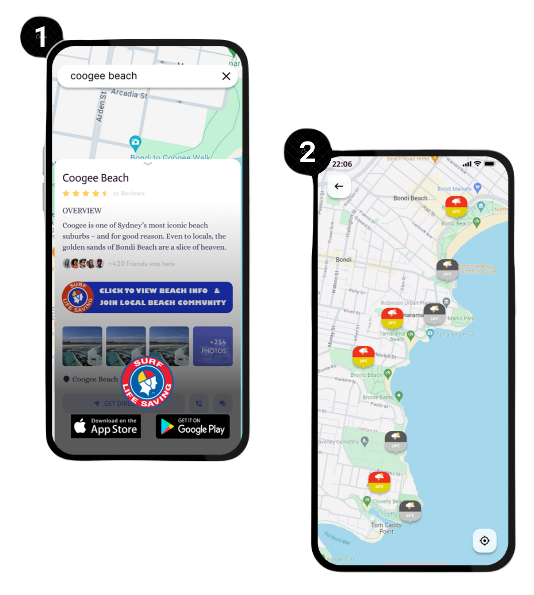
Integration with Google Maps: Beach Camp integrates with Google Maps, allowing users to access detailed beach safety features through the SLA app when searching for beaches.
Upon entering Beach Camp via Google Maps, users see an interactive map showing patrolled and unpatrolled beaches.
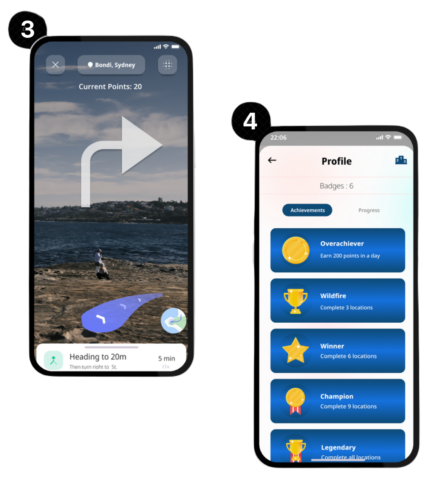
User Journey and Incentivization: AR features gamify safety education through scavenger hunts for guide coins and virtual safety cards, which can be redeemed for rewards like beach essentials, promoting ongoing engagement with safety features.
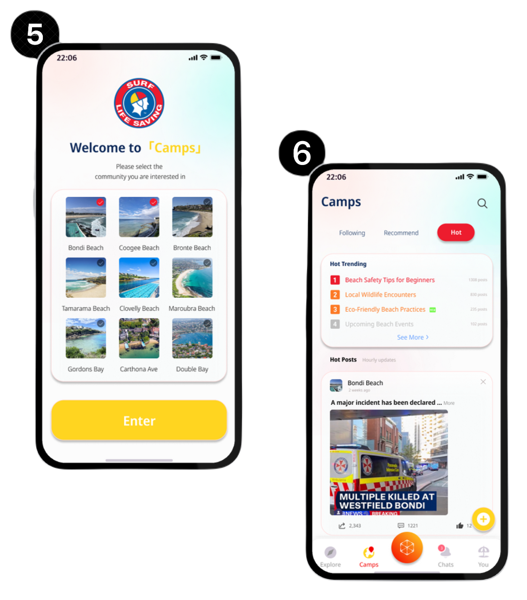
Community Engagement and AR Gaming: The app includes social forums for each beach, enabling users to connect, share updates, and form groups as well as get important information for each specific beach.
Beach Camp layers AR collection over real beaches through Google Maps.
The app
Application prototype
Built in Figma after multiple rounds of user feedback. The prototype demonstrates AR integration, real-time safety overlays, and the community forum experience.
Storyboard
Alex discovers Beach Camp via Google Maps, joins the Coogee Beach community channel, follows AR guides and ends up at a patrolled beach because that's where the rare cards are.
Conceptual video
A walkthrough of Beach Camp's core mechanics, showing how the AR reward system subtly steers users away from unpatrolled beaches without ever telling them what not to do.
Journey map
A 10-week development map showing how we moved from concept exploration and user research to a tested, exhibition-ready prototype, with the key pivots that shaped the final design.
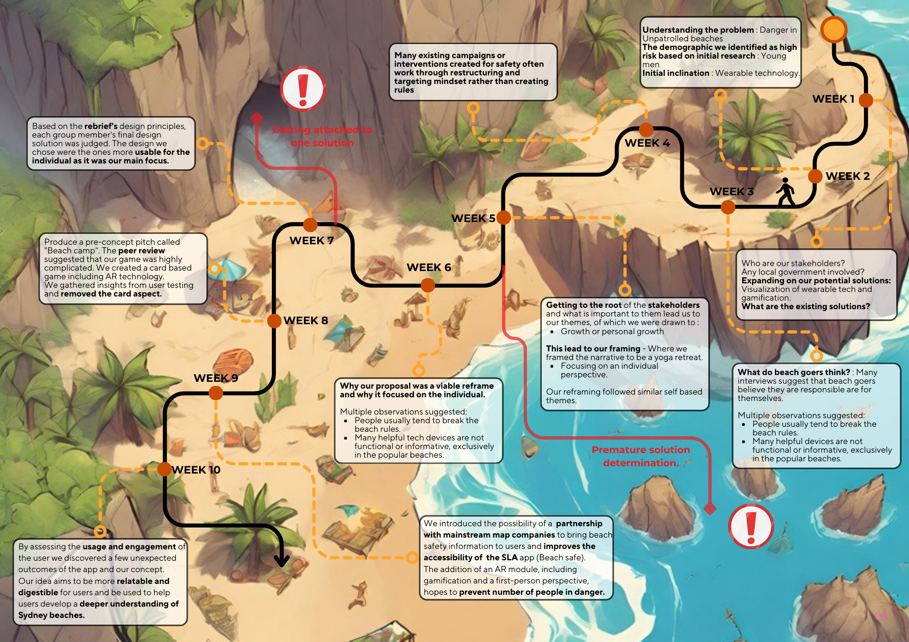
What the review flagged
We exhibited to Surf Life Saving and peers in week 13. Two issues came back: feasibility, and the size of the AR application, a real constraint for an app that has to work at a beach, often on patchy coverage, sometimes on older phones.
The third question was ours, and it's the one that stayed with us: how universally usable is this? An intervention that only works for people already comfortable with AR reaches the confident and misses everyone else, which is close to the demographic problem we set out to solve.
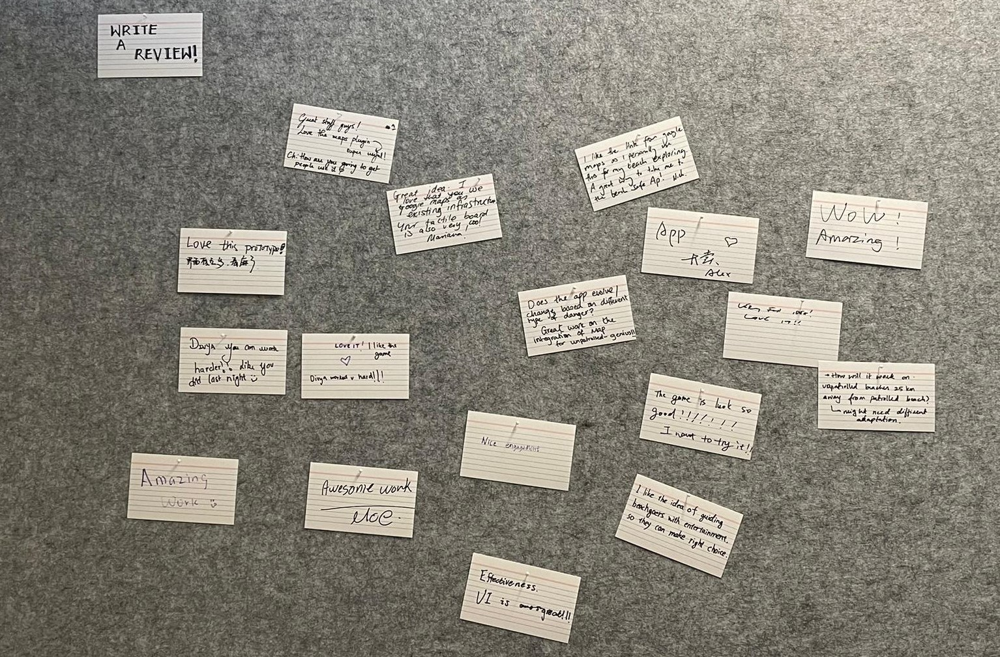
Feasibility and the size of the AR application were the two flags from the week 13 exhibit.
The people most at risk are often the least likely to have used AR. Who does a solution like this leave out?
Outcome
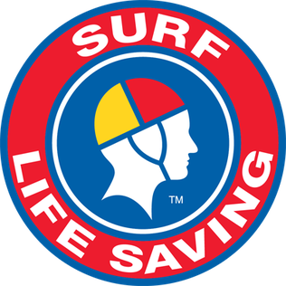
In partnership with Surf Life Saving AustraliaSelected as the standout submission from 30 entries and nominated for the 2024 USYD ADP Graduate Showcase. Concept stage. Figma prototype, Unity demo, physical exhibit. No user testing beyond the exhibit review.